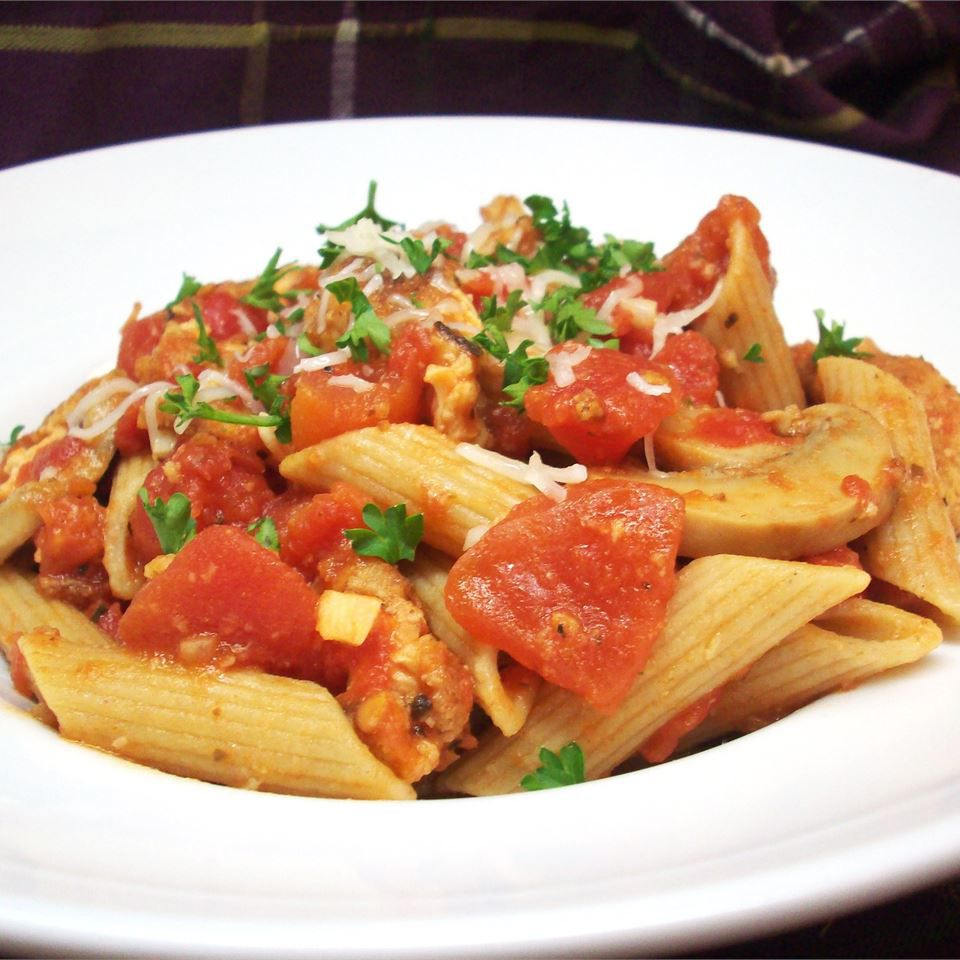

Back to homepage
Penne Arrabiata

Description
One thing I learned in my years living in the Canarsie section of Brooklyn, NY was how to cook a good Italian meal. Here is a recipe I created after having this dish in a restaurant. Enjoy!
Ingredients
- ½ cup olive oil, divided
- 6 cloves garlic, sliced
- 1 teaspoon red pepper flakes
- 1 (28 ounce) can diced tomatoes with garlic and olive oil
- ½ cup tomato sauce
- 1 bunch fresh basil, chopped
- 1 (12 ounce) package dried penne pasta
- 2 eggs
- 2 cups bread crumbs
- 1 teaspoon garlic powder
- 1 teaspoon salt
- 1 teaspoon pepper
- 1 pound thin chicken breast cutlets
Step-By-Step
Here's a very brief overview of what you can expect when you make Penne Arrabiata:
- Heat 1/4 cup of olive oil in a large skillet over medium heat. Add the garlic, and saute for a few minutes. Sprinkle in the red pepper flakes, and saute for another minute. Pour in the diced tomatoes and tomato sauce, and add the basil. Simmer for about 20 minutes, stirring occasionally.
- Meanwhile, bring a large pot of lightly salted water to a boil. Add penne pasta, and cook for 8 minutes, or until tender. Drain.
- In a small bowl, whisk eggs with a fork. Place bread crumbs in a separate bowl. Stir the garlic powder, salt and pepper into the bread crumbs. Dip chicken cutlets into the egg, then press into the bread crumbs until completely coated.
- In a small bowl, whisk eggs with a fork. Place bread crumbs in a separate bowl. Stir the garlic powder, salt and pepper into the bread crumbs. Dip chicken cutlets into the egg, then press into the bread crumbs until completely coated.
- Remove chicken, and cut into slices. Toss the chicken slices into the sauce, and simmer for about 10 minutes. Stir in the cooked penne, simmer for a few more minutes to soak up the flavor, then serve.